19/10/2023 — Bốn bệnh nhân đau ngực có điện tâm đồ “bình thường”: có thể tin vào kết quả đọc bằng máy tính không?
Bản dịch tiếng Việt của bài "Four patients with chest pain and ‘normal’ ECG: can you trust the computer interpretation?" – Dr. Smith’s ECG Blog. Giữ nguyên toàn bộ 20 hình ảnh của bản gốc.
Tác giả: Jesse McLaren
Bốn
bệnh nhân đến khám vì đau ngực. Tất cả các điện tâm đồ ban đầu đều được kết quả đọc bằng máy tính ghi là ‘bình thường’ hoặc
‘các mặt khác bình thường’, và dưới đây là các điện tâm đồ kèm
kết quả đọc cuối cùng của bác sĩ tim mạch. Nếu bạn đang làm việc tại một khoa cấp cứu
đông bệnh, bạn có muốn bị làm gián đoạn để đọc những điện tâm đồ này không, hay những
bệnh nhân này có thể an toàn chờ đến lượt khám vì kết quả đọc bằng máy tính là bình thường?
Bệnh nhân 1: điện tâm đồ cũ rồi đến điện tâm đồ mới

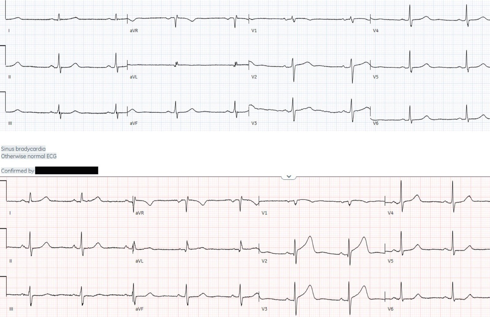
(thuật toán Marqette 12SL)
Bệnh nhân 2:

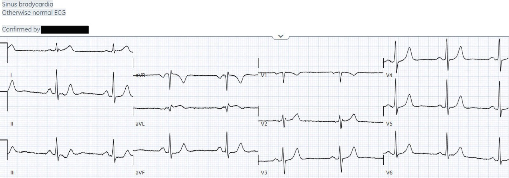
(thuật toán Marqette 12SL)
Bệnh nhân 3: điện tâm đồ cũ rồi đến điện tâm đồ mới

(thuật toán Marqette 12SL ghi là ‘bình thường’, kết quả đọc cuối cùng của bác sĩ tim mạch là ‘tổn thương thành dưới’)
Bệnh nhân 4:

(thuật toán Marqette 12SL)
Các điện tâm đồ được kết quả đọc bằng máy tínhghi là ‘bình thường’
Một
số nghiên cứu nhỏ cho rằng các điện tâm đồ được kết quả đọc bằng máy tính ghi là ‘bình thường’ hoặc ‘các mặt khác
bình thường’ ít có khả năng mang ý nghĩa lâm sàng,
rằng có thể an toàn khi không làm gián đoạn bác sĩ để đọc chúng, rằng
việc chậm đọc sẽ không ảnh hưởng đến chăm sóc bệnh nhân, và rằng
không nên kỳ vọng bác sĩ cấp cứu nhận ra những thay đổi tinh tế mà
máy tính bỏ sót.[1-3] Nhưng các nghiên cứu này có thời gian rất ngắn và dùng
kết quả đọc điện tâm đồ của bác sĩ tim mạch hoặc chụp mạch vành cấp cứu thay vì
kết cục của bệnh nhân.
Dr.
Smith’s ECG Blog đã công bố một danh sách ngày càng dài gồm hơn
40 ca điện tâm đồ bị máy tính ghi nhầm là ‘bình thường’ trong khi
lại có giá trị chẩn đoán nhồi máu cơ tim do tắc (Occlusion MI), và Smith và cs. đã công bố nhiều
lời cảnh báo về các nghiên cứu mang tính trấn an trước đây.[4,5]
Giờ đây chúng tôi
đã nghiên cứu chính thức câu hỏi này: Emergency
department Code STEMI patients with initial electrocardiogram labeled ‘normal’
by computer interpretation: a 7-year retrospective review (Bệnh nhân báo động STEMI tại khoa cấp cứu có điện tâm đồ ban đầu được kết quả đọc bằng máy tính ghi là ‘bình thường’: tổng quan hồi cứu trong bảy năm).[6] Trong số
394
bệnh nhân báo động STEMI (Code STEMI) tại khoa cấp cứu có tổn thương thủ phạm cấp tính
cần
can thiệp mạch vành, 16 (4,1%) đến viện với điện tâm đồ được kết quả đọc bằng máy tính ghi là
‘bình thường’ hoặc
‘các mặt khác bình thường’. Hơn một phần ba (37,5%)
được
bác sĩ cấp cứu nhận ra ngay trong thời gian thực, nhờ đó thời gian tái tưới máu
nhanh
hơn so với những ca không được nhận ra (thời gian trung bình từ cửa đến
phòng thông tim (door-to-cath)
là 80,2 so với 237,7 phút). Phần lớn (62,5%) các ca đến viện với
điện tâm đồ ‘bình thường’ đã được kích hoạt phòng thông tim mà không có bất kỳ điện tâm đồ nào được ghi là
‘STEMI’
bởi kết quả đọc tự động – dựa trên các dấu hiệu của nhồi máu cơ tim do tắc, bao gồm
thay đổi điện tâm đồ,
rối loạn vận động thành khu trú trên siêu âm tại giường, hoặc thiếu máu cục bộ
kháng trị. Đây là sự đánh giá thấp quy mô của các
điện tâm đồ ‘bình thường’, vì chúng tôi
chỉ xem xét những bệnh nhân nhập viện theo diện báo động STEMI, chứ không phải số lượng lớn hơn
các
bệnh nhân nhập viện theo diện ‘non-STEMI’, là những người nhiều khả năng có các thay đổi
tinh tế
bị máy tính bỏ sót hơn.
Nghiên cứu có kèm một phụ lục trực tuyến gồm tất cả các điện tâm đồ ‘bình thường’, từ đó
4 ví dụ này được chọn ra. Bây giờ hãy cùng xem lại các ca này để thấy mức độ an toàn của kết quả đọc bằng máy tính và cách những bệnh nhân này được xử trí. Chúng ta cũng có thể thấy tiềm năng của Queen of Hearts (AI được huấn luyện để nhận diện OMI) và các bước huấn luyện tiếp theo, điều này cũng giúp chính chúng ta học hỏi.
Bệnh nhân 1: OMI thành trước

So
với điện tâm đồ nền (điện tâm đồ thứ nhất), điện tâm đồ ban đầu tại khoa cấp cứu (điện tâm đồ thứ hai) có ST
chênh lên nhẹ và sóng T tối cấp ở V2-3 cùng ST chênh xuống nhẹ ở V6. Điều này
có giá trị chẩn đoán tắc LAD nhưng mơ hồ (equivocal) về tiêu chuẩn STEMI và đã bị bỏ sót
(và cả hai đều được ghi là ‘bình thường’ trong kết quả đọc cuối cùng của bác sĩ tim mạch).
Điện tâm đồ ghi lại 1 giờ sau đó:

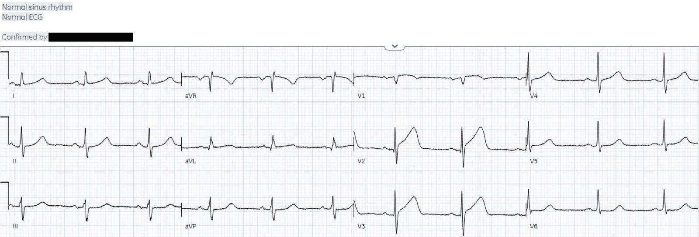
(thuật toán Marqette 12SL)
Đoạn ST ở các chuyển đạo trước thẳng đuỗn thêm, nhưng vẫn được kết quả đọc tự động và bác sĩ tim mạch đọc lại (overread) gọi là ‘bình thường’
Triệu chứng kéo dài và troponin ban đầu 611 ng/L (bình thường <16 ở nữ và <26 ở nam) đã dẫn đến hội chẩn tim mạch khẩn (STAT) và kích hoạt phòng thông tim, phát hiện
tắc 100% LAD. Thời gian từ cửa đến phòng thông tim là 145 phút, và troponin đỉnh là >50.000.
Xem kết quả đọc của AI Bot Queen of Hearts dưới đây:
Khi không có điện tâm đồ trước đó để so sánh, Queen of Hearts đọc điện tâm đồ thứ nhất là không phải OMI nhưng điện tâm đồ thứ hai là OMI. Điều này cho thấy tầm quan trọng của các điện tâm đồ trước đó (đây sẽ là giai đoạn huấn luyện tiếp theo cho Queen), và sự tinh tế của sóng T tối cấp.

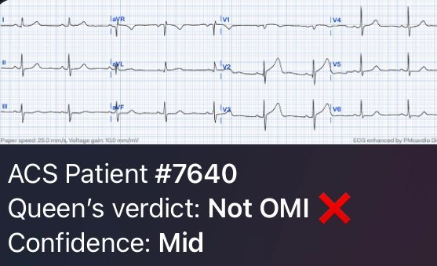

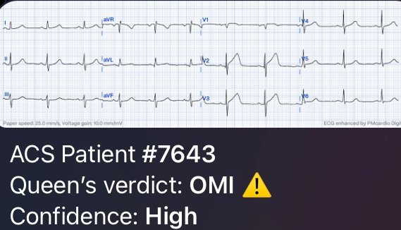
Bệnh nhân 2: OMI thành bên cao

Điện
tâm đồ thứ nhất cho thấy ST chênh lên nhẹ ở aVL kèm thay đổi soi gương (reciprocal) ở các chuyển đạo dưới, có giá trị chẩn đoán
nhồi máu cơ tim do tắc thành bên cao. Điều này đã được nhận ra, dẫn đến việc đánh giá bệnh nhân
ngay lập tức, bao gồm ghi lại điện tâm đồ và hội chẩn tim mạch khẩn.

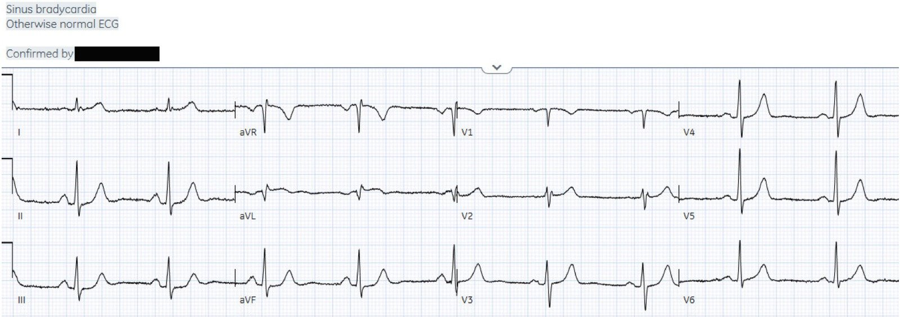
(thuật toán Marqette 12SL)
Không điện tâm đồ nào đạt tiêu chuẩn
STEMI (và cả hai đều được bác sĩ tim mạch đọc mù ghi là ‘các mặt khác bình thường’) nhưng
phòng thông tim vẫn được kích hoạt, phát hiện tắc 99% nhánh bờ tù. Thời gian từ cửa đến phòng thông tim
là 95 phút, troponin đầu tiên là 100 và đỉnh là 13.280 ng/L.
Queen of Hearts đọc riêng lẻ cả hai điện tâm đồ là không phải OMI – điện tâm đồ thứ nhất với độ tin cậy trung bình và điện tâm đồ thứ hai với độ tin cậy cao – nhưng Queen đang học hỏi theo thời gian và sẽ được huấn luyện để tích hợp các thay đổi trên các điện tâm đồ liên tiếp.

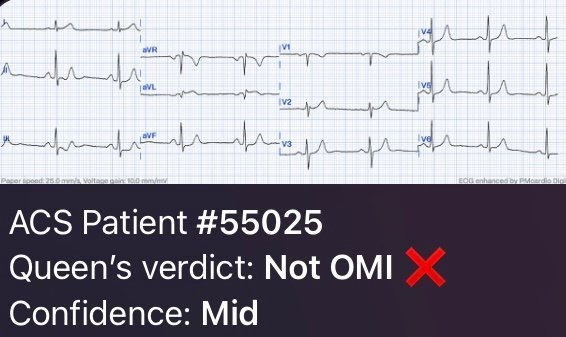

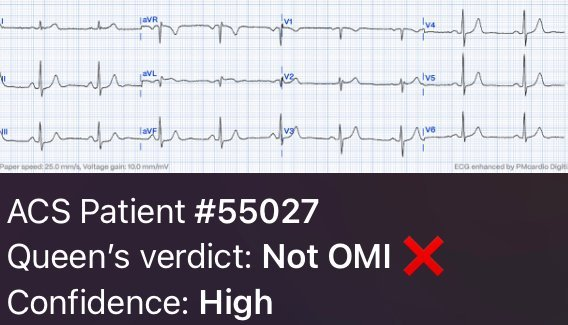
Bệnh nhân 3: OMI thành dưới

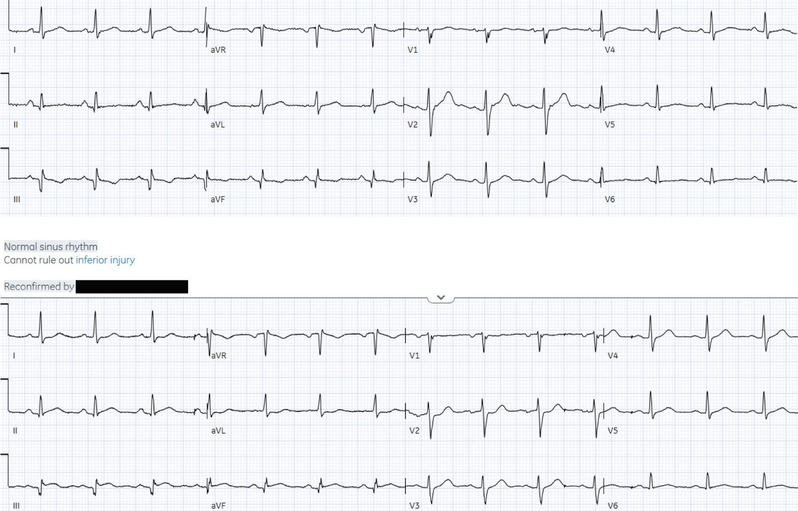
So
với điện tâm đồ nền (điện tâm đồ thứ nhất), điện tâm đồ ban đầu tại khoa cấp cứu (điện tâm đồ thứ hai) có ST chênh lên nhẹ
ở các chuyển đạo dưới và sóng T giả bình thường hóa, ST chênh xuống soi gương
ở aVL, ST chênh xuống ở V2, và sóng T lớn hơn ở V4-6. Điều này có giá trị chẩn đoán
nhồi máu cơ tim do tắc thành dưới-sau và đã được nhận ra ngay lập tức. Điện tâm đồ ghi lại
cho thấy ST chênh lên ở các chuyển đạo dưới tăng thêm nhưng vẫn chưa đạt tiêu chuẩn STEMI:

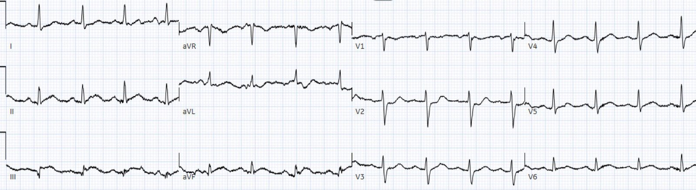
Phòng thông tim được kích hoạt và phát hiện tắc 100% động mạch vành phải (RCA).
Thời gian từ cửa đến phòng thông tim chỉ 52 phút, và troponin tăng từ 419 lên 7875 ng/L.
Khi không có điện tâm đồ trước đó để so sánh, Queen of Hearts vẫn đọc điện tâm đồ thứ nhất (và thứ hai) là OMI:

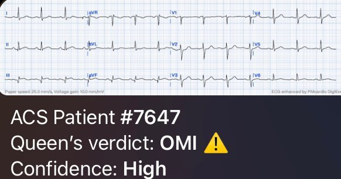
Bệnh nhân 4: OMI thành sau

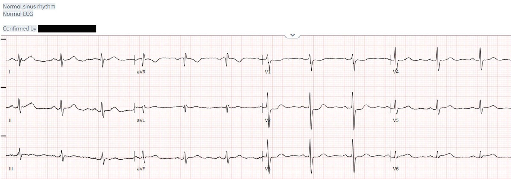
Điện
tâm đồ thứ nhất có ST chênh xuống ở V2-3 và ST chênh lên nhẹ ở V6, có giá trị chẩn đoán
nhồi máu cơ tim do tắc thành sau và đã được nhận ra ngay lập tức. Các chuyển đạo phía sau cho thấy
ST chênh lên nhẹ ở thành sau, được máy ghi là ‘không đặc hiệu’ nhưng là STEMI trong
kết quả đọc cuối cùng:

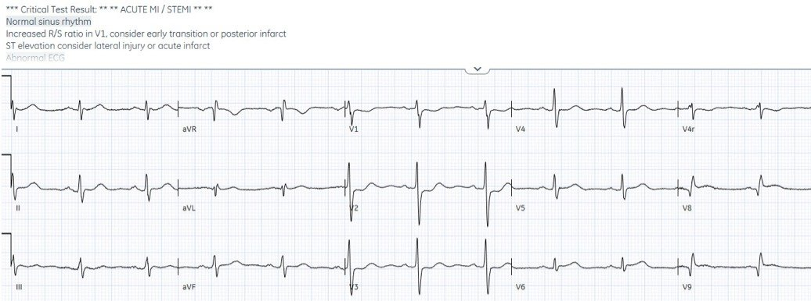
Phòng thông tim được kích hoạt và phát hiện tắc 100% nhánh
trung gian (ramus intermedius). Thời gian từ cửa đến phòng thông tim là 91 phút và troponin tăng từ
183 lên 46.226 ng/L.
Queen of Hearts đã nhận diện điện tâm đồ thứ nhất là OMI:

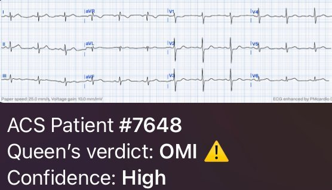
Điều cần nhớ
1.
Đừng
tin kết quả đọc bằng máy tính: máy có thể ghi những điện tâm đồ có giá trị chẩn đoán OMI là
‘bình thường’
2.
Các
dấu hiệu OMI trên điện tâm đồ có thể học được và có thể giúp nhận ra những trường hợp tắc mạch tinh tế, dẫn đến
tái tưới máu nhanh chóng
3. Queen of Hearts hiện đã vượt trội hơn hẳn các kết quả đọc bằng máy tính thông thường, và sẽ tiếp tục cải thiện theo thời gian, bao gồm cả việc tích hợp các điện tâm đồ liên tiếp. Điều này sẽ giúp khả năng đọc OMI ở trình độ chuyên gia trở nên phổ biến rộng rãi, và giúp chúng ta tiếp tục học hỏi những điểm tinh tế của việc đọc điện tâm đồ
4.
Các
dấu hiệu OMI khác bổ sung cho điện tâm đồ bao gồm rối loạn vận động thành khu trú
mới xuất hiện và thiếu máu cục bộ kháng trị
Tài liệu tham khảo
1.
Hughes
KE, Lewis SM, Katz
L, Jones J. Safety of
computer interpretation of normal triage electrocardiograms. Tạp chí Acad
Emerg Med. 2017; 24(1): 120–124
2.
Winter
LJ, Dhillon RK, Pannu
GK, Terrazza P, Holmes JF,
Bing ML. Emergent cardiac
outcomes in patients with normal electrocardiograms in the emergency department.
Tạp chí Am J Emerg Med. 2022; 51:
384–387
3.
Villarroel
NA, Houghton CJ, Mader
SC, Poronsky KE, Deutsch AL,
Mader TJ. A prospective
analysis of time to screen protocol ECGs in adult emergency department triage
patients. Tạp chí Am J Emerg Med. 2021; 46: 23–26
4.
Litell JM,
Meyers HP, Smith SW. Emergency physicians should be shown all triage ECGs, even
those with a computer interpretation of ‘normal’. Tạp chí J Electrocardiol.
2019; 54: 79–81.
5.
Bracey
A, Meyers HP, Smith
SW. Emergency physicians should interpret every
triage ECG, including those with a computer interpretation of ‘normal’. Tạp chí Am
J Emerg Med. 2022; 55: 180–182
6. McLaren JTT, Meyers HP, Smith SW, Chartier LB. Emergency department Code STEMI patients with initial
electrocardiogram labeled “normal” by computer interpretation: A 7-year
retrospective review. Tạp chí Acad Emerg Med
2023 https://doi.org/10.1111/acem.14795

===================================
BÌNH LUẬN CỦA TÔI, bởi KEN GRAUER, MD (19/10/2023):
===================================
Dr. McLaren mở đầu phần bàn luận của bài hôm nay như sau:
“Một số nghiên cứu nhỏ cho rằng các điện tâm đồ được kết quả đọc bằng máy tính ghi là ‘bình thường’ hoặc ‘các mặt khác bình thường’ ít có khả năng mang ý nghĩa lâm sàng — rằng có thể an toàn khi không làm gián đoạn bác sĩ để đọc chúng — rằng việc chậm đọc sẽ không ảnh hưởng đến chăm sóc bệnh nhân — và rằng không nên kỳ vọng bác sĩ cấp cứu nhận ra những thay đổi tinh tế mà máy tính bỏ sót.”
Phần xem xét của Dr. McLaren đối với điện tâm đồ của 4 bệnh nhân mà ông trình bày sau đó đã chứng minh một cách thuyết phục sai lầm của việc chấp nhận nguyên xi kết quả đọc “bình thường” của máy tính.
Tôi tập trung bình luận vào việc làm nổi bật kết luận sai lầm mà “một số nghiên cứu nhỏ” được Dr. McLaren nhắc tới đã đưa ra. Các kết luận của tôi giống hệt với của Dr. McLaren, cụ thể là:
- Không an toàn khi tránh làm gián đoạn bác sĩ cấp cứu — đơn giản vì trước khi có ứng dụng AI QOH (Queen Of Hearts) — không có kết quả đọc “bình thường” nào của máy tính trên điện tâm đồ của một bệnh nhân có triệu chứng đau ngực mới xuất hiện hoặc gần đây là đáng tin cậy. Bác sĩ cấp cứu phải được làm gián đoạn để xem nhanh tất cả các điện tâm đồ của những bệnh nhân đến khám vì đau ngực mới xuất hiện hoặc gần đây.
- Bác sĩ cấp cứu nên (và có thể!) được kỳ vọng, nhờ đào tạo, sẽ có khả năng nhận ra các OMI không phải STEMI mà máy tính bỏ sót. Điều thiết yếu là họ phải làm được điều này NẾU họ làm việc trong môi trường cấp cứu.
- Khi đã được đào tạo — đúng là chỉ mất chưa đến 5 giây để nhận ra phần lớn những OMI tinh tế này, vốn quá thường xuyên bị máy tính bỏ sót.
- Dù đã nói như trên — thực tế đáng tiếc (như đã được ghi nhận trong phần bàn luận xuất sắc của Dr. McLaren) — là những OMI tinh tế có thể (và nên!) được nhận ra kịp thời vẫn đang bị bỏ sót bởi quá nhiều bác sĩ lâm sàng — những người vẫn tiếp tục phủ nhận giá trị của mô hình OMI mới.
Để CHỨNG MINH quan điểm của tôi:
Trước đây tôi chưa từng xem 4 điện tâm đồ ban đầu mà Dr. McLaren trình bày trong bài hôm nay. “Được trang bị” hiểu biết rằng mỗi bệnh nhân này đều đến khoa cấp cứu vì đau ngực — CP (Chest Pain) — đúng là tôi chỉ mất chưa đến 5 giây với mỗi điện tâm đồ này để biết rằng sẽ cần thông tim kịp thời.
- Các chi tiết bổ sung về từng ca trong 4 ca này đã được trình bày đầy đủ trong phần bàn luận của Dr. McLaren. Nhưng chúng không cần thiết để đi đến quyết định nhanh rằng cần thông tim kịp thời, dựa trên điện tâm đồ ban đầu và bệnh sử đau ngực mới xuất hiện.
- Tôi tin chắc rằng việc nhận ra những dấu hiệu MẤU CHỐT này là một kỹ năng có thể dạy được.
=======================================
Tự kiểm tra! — Hãy NHÌN lại điện tâm đồ ban đầu của từng ca trong 4 ca mà Dr. McLaren đã trình bày ở trên. 1 hoặc 2 dấu hiệu MẤU CHỐT nào sẽ cho bạn biết chỉ trong vài giây rằng ở một bệnh nhân đau ngực mới xuất hiện hoặc gần đây — sẽ cần thông tim sớm (ngay cả trước khi bạn xem các chuyển đạo còn lại)?
- Tôi trình bày lại điện tâm đồ ban đầu của từng ca trong 4 ca hôm nay ở Hình 1.
- Tôi đánh dấu trong một khung chữ nhật ĐỎ chuyển đạo (hoặc các chuyển đạo) lập tức “đập vào mắt tôi” với ý nghĩ “Không đời nào điều này là bình thường ở một bệnh nhân đau ngực mới xuất hiện hoặc gần đây”.
- Sau đó tôi đánh dấu trong một khung chữ nhật XANH chuyển đạo (hoặc các chuyển đạo) mà tôi thấy ngay sau khi nhận ra dấu hiệu trong (các) khung chữ nhật ĐỎ — những chuyển đạo xác nhận rằng “Không đời nào bệnh nhân đau ngực mới xuất hiện hoặc gần đây này lại không cần thông tim sớm”.

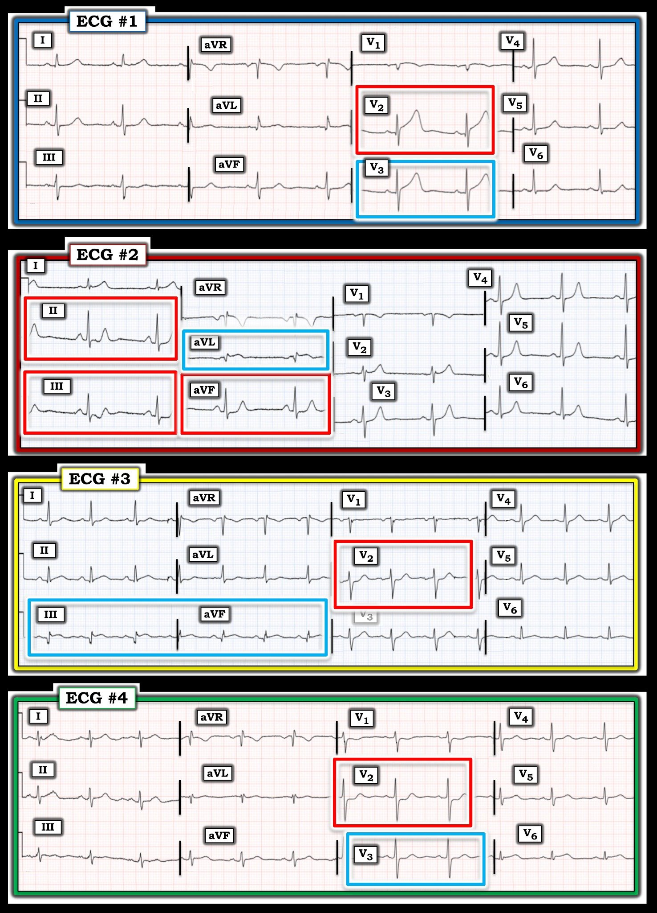
Lựa chọn khung chữ nhật ĐỎ và XANH của tôi:
- Điện tâm đồ #1: Ở một bệnh nhân đau ngực mới xuất hiện hoặc gần đây, sóng ST-T hoàn toàn không tương xứng và quá “đồ sộ” ở chuyển đạo V2 (vượt quá biên độ sóng R ở chuyển đạo này) — phải được coi là sóng ST-T tối cấp cho đến khi chứng minh được điều ngược lại (nhất là khi có sóng q bất thường ở chuyển đạo này).
- Dù không bất thường rõ rệt như sóng ST-T ở chuyển đạo V2 — cần thấy rõ rằng chuyển đạo V3 kế cận cũng biểu hiện sóng ST-T tối cấp (cao hơn, “béo hơn” ở đỉnh và rộng hơn ở chân so với mức lẽ ra phải có, xét theo biên độ QRS ở chuyển đạo này).
- Điện tâm đồ #2: Đoạn ST chênh xuống dốc xuống “trông xấu xí”, gấp góc đột ngột rồi kết thúc bằng sóng T dương cao không tương xứng ở mỗi chuyển đạo thành dưới — rõ ràng là bất thường.
- Xác nhận OMI cấp phải hiển nhiên từ ST chênh lên bất thường ở chuyển đạo aVL (trong khung chữ nhật XANH).
- Điện tâm đồ #3: Bình thường — đoạn ST ở các chuyển đạo trước V2 và V3 phải chênh lên nhẹ, dốc lên thoai thoải. Vì vậy, ở một bệnh nhân đau ngực mới xuất hiện hoặc gần đây — dấu hiệu ST thẳng đuỗn “dạng bậc thềm” kèm ST chênh xuống nhẹ, rõ nhất ở chuyển đạo V2, V3 hoặc V4 (như thấy ở chuyển đạo V2 trong khung chữ nhật ĐỎ) — phải được coi là OMI thành sau cấp cho đến khi chứng minh được điều ngược lại.
- Xác nhận OMI thành sau (cũng như thành dưới) cấp phải hiển nhiên từ sóng Q lớn không tương xứng và ST chênh lên tối cấp ở chuyển đạo III và aVF (trong khung chữ nhật XANH).
- Điện tâm đồ #4: Đây là phiên bản kín đáo hơn của điện tâm đồ #3 — ở chỗ các thay đổi ở chuyển đạo chi không có giá trị chẩn đoán. Nhưng ở một bệnh nhân đau ngực mới xuất hiện hoặc gần đây — ST thẳng đuỗn “dạng bậc thềm” kèm ST chênh xuống nhẹ, rõ nhất ở chuyển đạo V2 một lần nữa cho phép chẩn đoán OMI thành sau cấp (trong khung chữ nhật ĐỎ).
- Đoạn ST dẹt kín đáo hơn nhưng vẫn không phù hợp ở chuyển đạo V3 kế cận xác nhận OMI thành sau cấp (trong khung chữ nhật XANH).